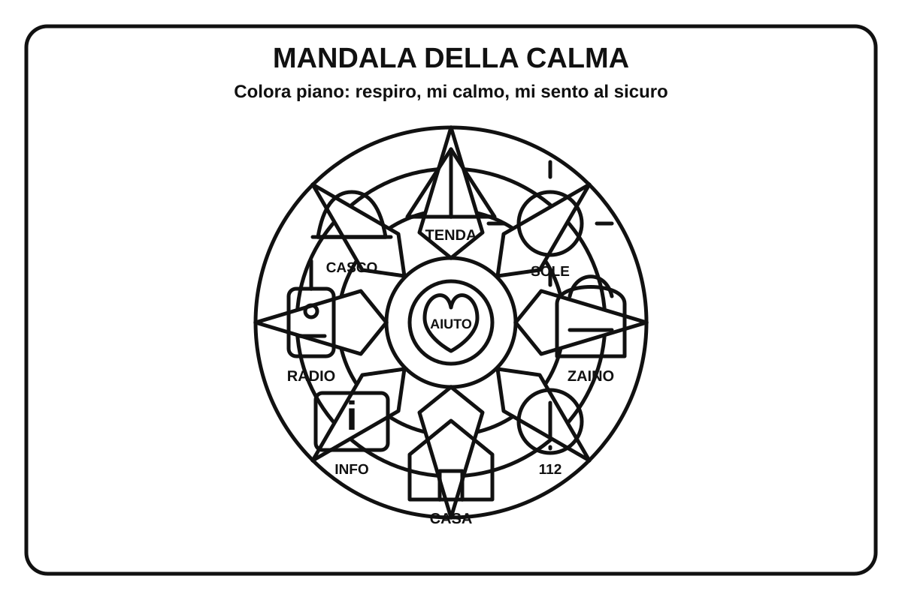

PC Protezione CivileGruppo Comunale Volontari — Genzano di Roma Bambini · 3-5 anni Il mio mandala della calma 3-5 anni 🧘 Colora piano: respira, osserva i simboli della sicurezza e prenditi un momento di calma. 